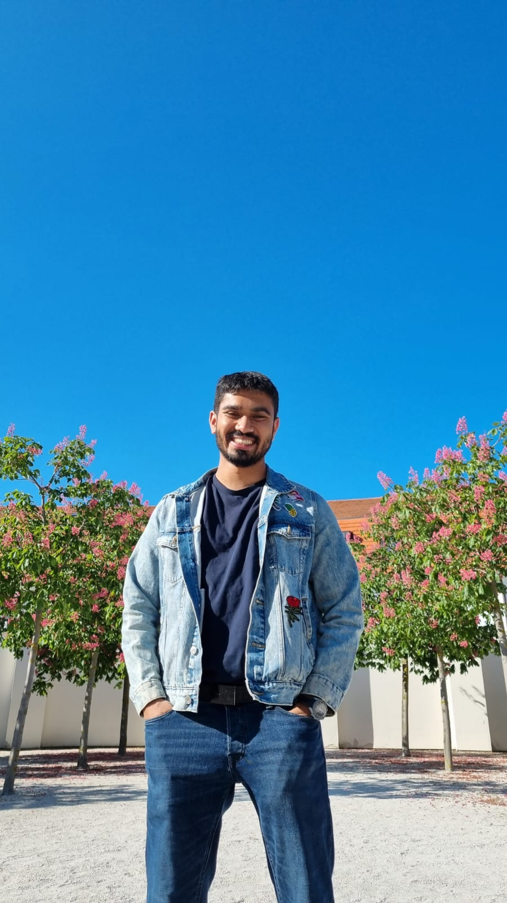

Laxman
Kanagaratnam
I study physics and astronomy at the University of Vienna and work in the Alves Lab, where I focus on stellar clustering in the Vela region. I'm driven by the question of how large-scale structure in the Milky Way forms and evolves.
Research
Large-Scale Structure in the Vela Region
My thesis investigates the large-scale structure in the Vela region using Gaia DR3 data.
I apply the SigMA
clustering algorithm, developed by Sebastian Ratzenboeck, to identify and characterise stellar groups.
The project is implemented in Python and maintained openly on GitHub.
Noise Removal Strategy for SigMA
Upcoming work on developing a noise-removal strategy for the
SigMA
clustering algorithm, improving its robustness against field contamination in dense stellar environments.
Publications
Bachelor Thesis (in preparation)
Aiming to publish my BSc thesis.
Background
Education
BSc Physics
141/180 ECTS · Expected graduation: June 2027
BSc Astronomy
167/180 ECTS · Expected graduation: June 2026
MIT OpenCourseWare
Physics lectures to compensate for schedule conflicts
Teaching
Dynamics and Thermodynamics
TA, supervised by Prof. Kislyakova & Prof. van de Ven
Medical Physics Laboratory
TA, supervised by Dr. Olga Jovanovic
Analysis I
TA and Senior Coach, supervised by Prof. Figalli & Dr. Caspar
Volunteering & Projects
Academic Community Contributions
Semester summaries and exam-preparation notes for BSc Physics & Astronomy students
aCentauri Solar Racing
Bridgestone World Solar Challenge 2023
Physics I Formula Compendium
Co-developed the official LaTeX compendium, supervised by Prof. Wegscheider
Matura Project Exhibitor
Saturday Morning Physics, supervised by PD Dr. Liebendorfer
Skills & Extras
Programming & Tools
PythonNumPymatplotlibpandasAstropyJupyterLaTeXGitHub
Astronomical Software
TOPCATSimbadMuniwinVStarMinima27
Extracurriculars
Private tutor (math & physics) · Chess Club Therwil (former teacher & member)